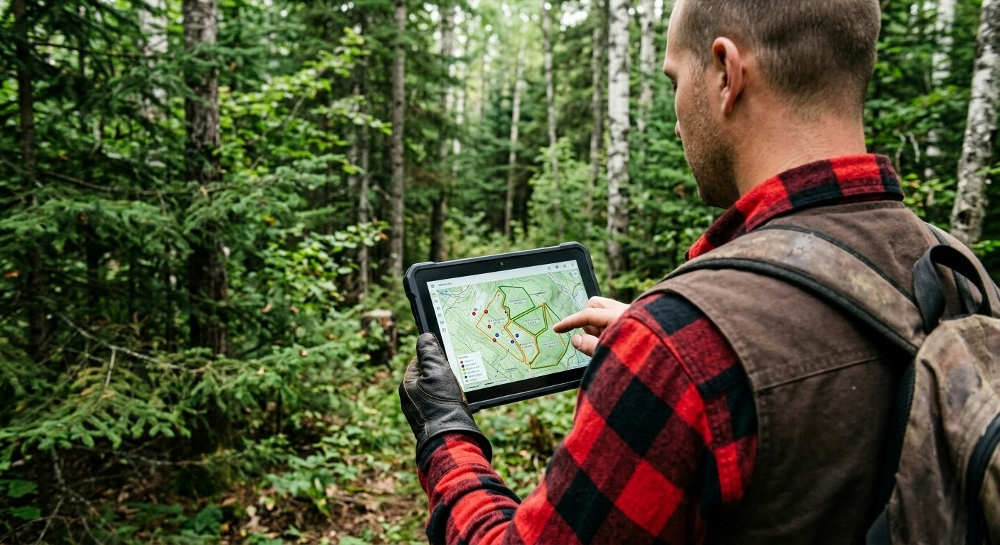

GPS data collection in the forest represents a unique challenge that professionals from other industries often struggle to understand. Under the dense canopy of the Canadian boreal forest, satellite signals are attenuated, reflected and sometimes completely blocked. Yet, positioning accuracy is critical for delineating cutting areas, respecting buffer zones, mapping forest roads and documenting operations for government compliance. This guide explores the specific challenges of forestry GPS and the solutions that deliver reliable data even in the most difficult conditions.
The challenges of GPS under the boreal forest canopy
The Canadian boreal forest poses considerable obstacles to satellite signal reception. Understanding these challenges is the first step toward overcoming them.
Canopy attenuation
Dense stands of black spruce, balsam fir and jack pine create a forest canopy that can attenuate GPS signals by 10 to 20 dB. In winter, when snow accumulates on the branches, attenuation can be even greater. This signal loss translates directly into a reduced number of visible satellites and, consequently, degraded accuracy.
Multipath effect in rugged terrain
Narrow valleys, rock outcrops and mountain slopes characteristic of the Canadian Shield cause satellite signal reflections, a phenomenon called multipath. The GPS receiver picks up the same signal via multiple paths, creating positioning errors that can reach several metres. Ravines and topographic depressions are particularly problematic.
Extreme weather conditions
Forestry operations in Canada take place in conditions ranging from -40 degrees Celsius in winter to scorching summer days, along with torrential rains in spring and fall. GPS equipment must not only survive these conditions but maintain consistent accuracy. Extreme cold affects battery performance and can slow the initial satellite fix time.
Types of GPS for forestry
Several categories of GPS devices are used in forestry, each with its own advantages and limitations:
Handheld field GPS units
Handheld GPS receivers from brands like Garmin remain popular for their ruggedness and simplicity. However, their accuracy is generally limited to 3-5 metres in open areas and can degrade considerably under forest canopy. Furthermore, transferring data to a computer system requires manual steps that slow down workflow.
Rugged tablets with integrated GPS
Rugged tablets offer the advantage of combining GPS with a comprehensive forestry GPS software application. Data entry, map visualization and positioning all happen on the same device, eliminating manual transfers. Their touchscreens facilitate interaction with maps and forms, even when wearing work gloves.
External Bluetooth SPP GPS receivers
To improve accuracy beyond what a tablet's built-in GPS can offer, external Bluetooth SPP GPS receivers (Serial Port Profile) represent the best option. Devices such as the Bad Elf GNSS Surveyor or Emlid receivers offer sub-metre accuracy by connecting wirelessly to the tablet. The SPP protocol transmits NMEA data in real time, allowing the field software to leverage much more precise positioning than the built-in GPS.
GNSS vs GPS: why multi-constellation matters in the forest
The term GPS specifically refers to the American satellite navigation system. The term GNSS (Global Navigation Satellite System) encompasses all available satellite constellations: GPS (United States), GLONASS (Russia), Galileo (Europe) and BeiDou (China). Under a dense forest canopy, the difference is significant.
A GPS-only receiver has access to approximately 30 orbiting satellites. A multi-constellation GNSS receiver accesses over 120 satellites across four systems. Under the canopy, where only a fraction of satellites are visible, this multiplication of signal sources can mean the difference between a reliable 3D fix and an inability to determine position. In dense boreal forest, testing shows that a multi-GNSS receiver maintains a fix in conditions where a GPS-only receiver loses lock entirely.
Essential mapping features for forestry field work
Offline maps and MbTiles format
Without internet connectivity in the forest, online maps are useless. The MbTiles format allows map tiles to be stored directly on the device for instant access, even deep in the forest. Detailed maps of each operating area can be prepared before heading to the field, including satellite imagery, contour lines and cadastral boundaries.
Government WMS and WMTS layers
Provincial governments make rich cartographic layers available via WMTS services: lot boundaries, protected areas, hydrography, forest roads, eco-forest inventory and much more. A good forestry GPS software must be able to display these layers overlaid with field data, allowing operators to see their position in real time relative to regulatory boundaries.
Best practices for maximizing GPS accuracy in the forest
Beyond equipment selection, certain field practices considerably improve GPS data quality. Using precision filters, averaging multiple positions on the same point, choosing optimal time windows and correctly positioning the antenna are all techniques that make a difference. For a detailed guide to these practices, see our article on GPS best practices in forestry.
The GPS capabilities of MobileLogix and ForestLogix
MobileLogix was designed from the ground up for the challenges of GPS under forest canopy. The application supports external GNSS receivers via Bluetooth SPP, displays offline MbTiles maps, integrates government WMTS layers and offers configurable precision filtering tools. Automatic GPS track recording with timestamps documents every movement on the job site.
ForestLogix, on the office side, centralizes all GPS data collected in the field and displays it on a complete mapping interface. Managers can visualize all tracks, waypoints and georeferenced zones from every job site in a single dashboard.
For reforestation operations, TrackLogix offers specialized forest GPS tracking that maps planted areas, calculates acreage and documents reforestation progress in real time.
Integration with GIS tools: QGIS and ArcGIS
GPS data collected in the field does not exist in a vacuum. It must integrate with the geographic information systems (GIS) used by forest engineers and planners. SIGLogix facilitates this integration by enabling data export to QGIS and ArcGIS in standard formats (Shapefile, GeoJSON, GeoPackage). GPS tracks, waypoints and polygons collected with MobileLogix can be directly imported into GIS projects for spatial analysis, thematic map production and planning of future operations.
Bidirectional interoperability means that planners can also prepare data layers in QGIS or ArcGIS and transfer them to field tablets to guide operators in their daily work.
Optimize your GPS data collection now
The quality of GPS data determines the quality of all downstream decisions: cut planning, regulatory compliance, volume calculations and billing. Investing in the right equipment and the right forestry GPS software is an investment in the reliability of your entire operation.
The G.A. Logix team has deep expertise in forestry geomatics and can help you choose the solution adapted to your needs. Contact us to discuss your GPS challenges and discover how our solutions can improve the accuracy and efficiency of your forest data collection.